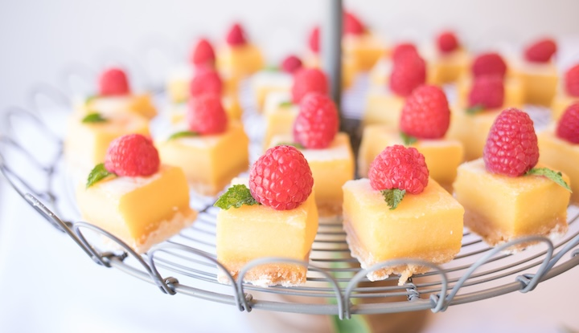

Mastering Raspberry Lemon Bars

Desserts were never my forte, especially during my early cooking endeavors. I remember the frustration of failed attempts and soured ingredients. But it was during one summer, surrounded by ripe raspberries and the zesty fragrance of lemons, that I stumbled upon a recipe that changed my perception of dessert-making.
Raspberry Lemon Bars became my saving grace—a simple yet elegant dessert that beckoned me to try again. The process of creating the buttery crust, the vibrant raspberry puree, and the tangy lemon filling was a therapeutic journey in itself.
As the bars baked, my kitchen filled with the irresistible aroma of sweet raspberries and citrusy lemon. When I pulled them out of the oven, the vibrant red and golden hues were a sight to behold. Each bite revealed layers of flavor—the crumbly crust, the burst of raspberry, and the refreshing lemon zing.
These bars weren't just a dessert; they were a symbol of perseverance and the joy of finally mastering a sweet treat. From that moment on, Raspberry Lemon Bars became my go-to dessert, a celebration of summer's bounty and the sweetness of resilience.
Bruschetta
For the crust:
- 1 cup all-purpose flour
- 1/4 cup powdered sugar
- 1/2 cup unsalted butter, softened
For the filling:
- 1 cup fresh raspberries
- 3/4 cup granulated sugar
- 2 tablespoons all burpose flour
- 2 large eggs
- Zest of 1 lemon
- 3 tablespoons fresh lemon juice
- Powdered sugar for dusting
Instructions
- Preheat your oven to 350°F (175°C). Grease or line an 8-inch square baking pan.
- In a bowl, mix together the flour, powdered sugar, and softened butter until crumbly. Press the mixture evenly into the bottom of the prepared pan.
- Bake the crust in the preheated oven for 15-20 minutes, or until lightly golden.
- While the crust is baking, prepare the filling. In a blender or food processor, puree the raspberries until smooth. Strain the puree through a fine-mesh sieve to remove the seeds.
- In another bowl, whisk together the granulated sugar, flour, eggs, lemon zest, and lemon juice until well combined. Gently fold in the raspberry puree.
- Pour the raspberry mixture over the baked crust and return the pan to the oven.
- Bake for an additional 20-25 minutes or until the filling is set.
- Allow the bars to cool completely in the pan before slicing into squares. Dust with powdered sugar before serving.